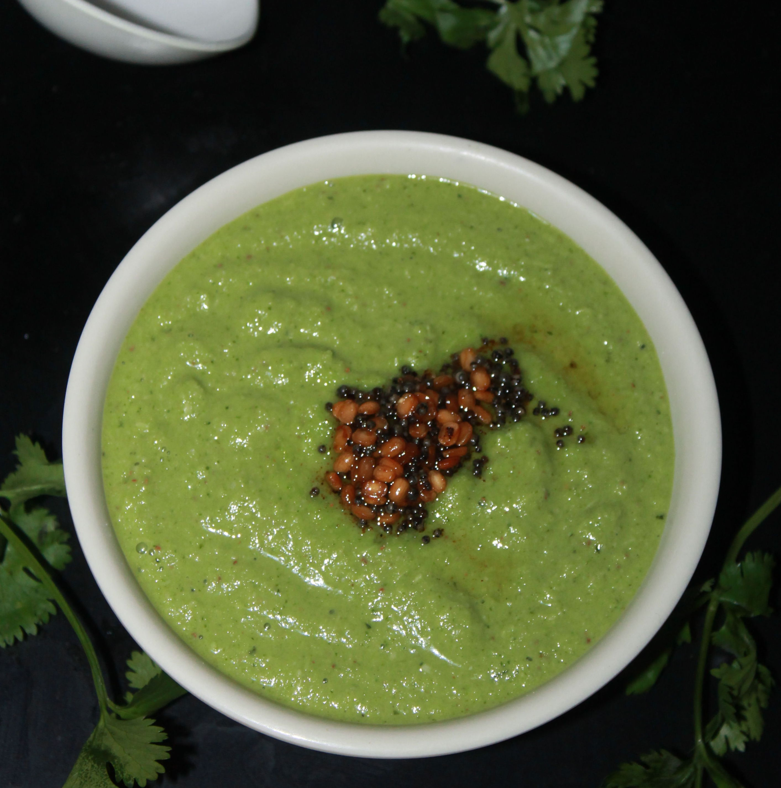

Podinay ki Chutney (Mint Chutney)
Submitted by Sarah Ijaz
Quintissential Pakistani condiment. Dip your fried foods, dollop on your burger or eat with just about anything!
Prep Time: 10 Mins
Cook Time: 5 Mins
Ingredients
- Fresh mint leaves: 4 cups
- Garlic: 2 cloves
- Green chillies: 2-4 to taste
- Lemon or lime juice: 2 tbsp
- Water: 2 tbsp
- Salt to taste
- *Yogurt: 1 cup
*optional
Directions
- Blend together everything! Blending in yogurt will make a more subtle condiment.